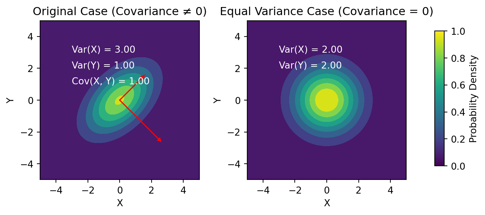
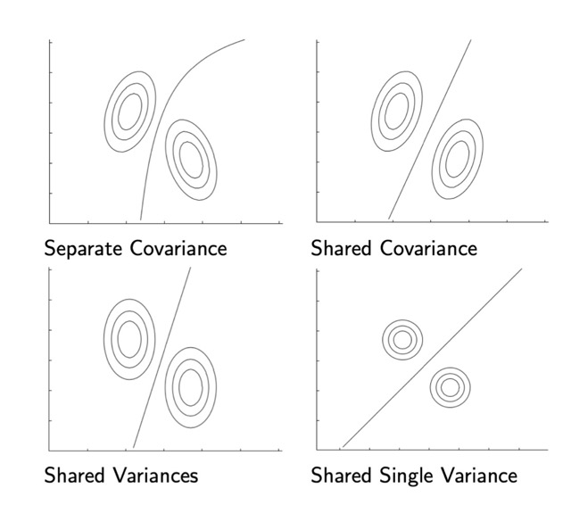

For instance when \(D=2\) we can think of \(x_1\) as the amount of black pixels in the image, and \(x_2\) as the white pixels. Then I can clasify one image into this 2-D dimensional space. So in the xy-plane one image has \((x1,x2)\) coordinates
We dive \(\underline{x}\) into \(K\) Decision Regions \(R_k\).
For each Decision Region \(R_k\) we assign it to a class \(C_k\).
The target \(\underline{t} \in \{C_1,...,C_k\}\) meaning the target can be classified either \(C_1\) or the target can be classified as \(C_2\)
2 Linear Classification
Note: do not confuse \(D\) the amount of data points with this new \(D\) where we talk about the dimensionality of how each data point is represented (the coordinates)
The classification is done by only linear decision boundaries
For \(D\)-dimensional input space: \(\underline{x}\in\mathbb{R}^{D}\). The decision surface is a \(D-1\) dimensional hyperplane. For instance:
The decision boundaries can take a form of a line, i.e when \(\underline{x}\in\mathbb{R}^{D=2x1}\) meaning the dots are drawn in the \(x,y\) coordinates
The decision boundaries can take a form of a plane, i.e when \(\underline{x}\in\mathbb{R}^{D=3x1}\) meaning the dots are drawn in the \(x,y,z\) coordinates
Linear Classifiers have however some constraints: one-versus-one, or one-vs-rest cannot classified in one specific region when majority vote its applied. There is class of decisions
3 Decision Theory
Here we talked about when we consider a classifier (a model) a good classifier.
Here we do not impose \(diag\{\Sigma_k\}\), we can have Naive Bayes approach here. The latter meaning we can indeeed if we want have the covariance matrices to be \(diag\{\Sigma_k\}\). In this called we called. Naive Bayes applied to LDA.
Naive Bayes applied to LDA: same/shared parameters for \(\Sigma_k\) and \(diag\{\Sigma_k\}\)
Understanding Covariance and Variance
Code
import numpy as npimport matplotlib.pyplot as pltfrom scipy.stats import multivariate_normalimport matplotlib.colorbar as cbar# Define the mean and covariance matrix for the original casemean = [0, 0]covariance_matrix = [[2, 1], [1, 2]] # Example covariance matrix# Create a grid of pointsx, y = np.meshgrid(np.linspace(-5, 5, 100), np.linspace(-5, 5, 100))pos = np.dstack((x, y))# Create a multivariate Gaussian distribution for the original caserv = multivariate_normal(mean, covariance_matrix)# Calculate the probability density at each point in the grid for the original casepdf = rv.pdf(pos)# Calculate eigenvalues and eigenvectors for the original caseeigenvalues, eigenvectors = np.linalg.eig(covariance_matrix)# Define the scale factor for the arrowsscale_factor =2.0# Create the first subplot for the original caseplt.subplot(1, 2, 1)plt.contourf(x, y, pdf, cmap='viridis')for i inrange(2): plt.arrow( mean[0], mean[1], eigenvectors[i, 0] * np.sqrt(eigenvalues[i]) * scale_factor, eigenvectors[i, 1] * np.sqrt(eigenvalues[i]) * scale_factor, head_width=0.2, head_length=0.2, fc='r', ec='r', )plt.annotate(f'Var(X) = {eigenvalues[0]:.2f}', xy=(-3, 3), color='white')plt.annotate(f'Var(Y) = {eigenvalues[1]:.2f}', xy=(-3, 2), color='white')plt.annotate(f'Cov(X, Y) = {covariance_matrix[0][1]:.2f}', xy=(-3, 1), color='white')plt.title('Original Case (Covariance ≠ 0)')# Define the mean and covariance matrix for the equal variance caseequal_variance_cov_matrix = np.diag([2, 2]) # Equal variance along both dimensions# Create a multivariate Gaussian distribution for the equal variance caserv_equal_variance = multivariate_normal(mean, equal_variance_cov_matrix)# Calculate the probability density at each point in the grid for the equal variance casepdf_equal_variance = rv_equal_variance.pdf(pos)# Create the second subplot for the equal variance caseplt.subplot(1, 2, 2)plt.contourf(x, y, pdf_equal_variance, cmap='viridis')plt.annotate(f'Var(X) = {equal_variance_cov_matrix[0, 0]:.2f}', xy=(-3, 3), color='white')plt.annotate(f'Var(Y) = {equal_variance_cov_matrix[1, 1]:.2f}', xy=(-3, 2), color='white')plt.title('Equal Variance Case (Covariance = 0)')# Set common labelsfor ax in plt.gcf().axes: ax.set_xlabel('X') ax.set_ylabel('Y')# Ensure equal aspect ratio for both subplotsfor ax in plt.gcf().axes: ax.set_aspect('equal', adjustable='box')# Create a new axes for the legend with adjusted widthcax = plt.gcf().add_axes([0.96, 0.3, 0.02, 0.4]) # Adjust the width and position as needed# Plot vertical colorbar for the legendcbar.ColorbarBase(cax, cmap='viridis', orientation='vertical', label='Probability Density')# Adjust the overall layoutplt.subplots_adjust(wspace=0.3)plt.show()

This plot visually illustrates how variance represents the spread along each dimension, and the arrows depict how the covariance matrix encodes the relationships between the dimensions in a Gaussian distribution.
Original Case (Covariance ≠ 0):
In the first plot (Original Case), the color yellow represents regions where the probability density is higher. In a Gaussian distribution, the probability density is highest at the mean (center) of the distribution and decreases as you move away from the mean. The color yellow typically corresponds to higher probability values in this context.
Equal Variance Case (Covariance = 0):
In the second plot (Equal Variance Case), the color yellow also represents regions of higher probability density. Even though the covariance is zero, meaning there is no linear relationship between the X and Y dimensions, the multivariate Gaussian distribution still has a peak at the mean (center) in each dimension. The color yellow again corresponds to higher probability values in this context.

QDA: they have separate Covariances
LDA: they share a non-zero covariance
Here the shared variances mean for example 3 in the y-direction and 1 in the x-direction, they however contain a non-zero covariance
Here the shared variances mean for example 1 in the y-direction and 1 in the x-direction, they however contain a zero covariance.
Where \(a\) is defined was defined as the log odds. So replacing \(p(x|C_k)\) so replacing \(\ref{gaussian_lda}\) (the Gaussians) in the log odds \(\ref{log_odds}\) give us The Generalized Linear Model:
And now recall that the decision boundary happens when \(p(C_1|x) = p(C_2|x)\).
This all means if we want to make decisions based on the posterior distributions, then \(a=0\) meaning the prob/prob is 1 or the \(\sigma(a) = \frac{1}{2}\)
8 LDA: Maximum Likelihood for K=2
Goal: recover the Gaussian distributions (the join distribution = p(X, C_k)) that have generated the data. To accomplished that we need to take the MLE over the the Gaussian conditional densities aka the likelihood and solve for \(u_k\), \(\Sigma\) and priors \(p(C_k)\)
Isometric Covariance definition
It is a special case of a covariance matrix where all off-diagonal elements are zero, and the diagonal elements are equal, representing a constant variance or dispersion in all dimensions.
Mathematically, an isometric covariance matrix Σ can be represented as:
Σ = σ² * I
Where:
Σ is the covariance matrix.
σ² is the common variance or dispersion parameter.
I is the identity matrix, which has ones on the diagonal and zeros elsewhere.
In this form, each element along the diagonal of the covariance matrix Σ is equal to σ², and all off-diagonal elements are zero. This implies that the variables in a multivariate distribution with an isometric covariance matrix have equal variances and are uncorrelated with each other.
\(\mu_{2,Ml}\) is the sample mean of all my observations where \(x_n\) belongs to class \(K=2\)
8.3 Covariance for discrete Random Variables
For class \(i\) the covariance matrix can be calculated as: \[
\begin{align}
\Sigma_i &= \frac{1}{N_i}\sum_{n=1}^{N_i}(x_n-\mu_i)(x_n-\mu_i)^T \\
\end{align}
\]
Where:
\(N_i\) is the number of data points in class \(i\)
\(x_n\) is a data point in class \(i\)
\(\mu_i\) is the mean vector of class \(i\)
How to classify a new data point?
Gaussian Classifier: Once you have the covariance matrices for each class, you can use them to build a Gaussian classifier. The Gaussian classifier estimates the likelihood of a given data point belonging to each class based on the probability density function of a multivariate Gaussian distribution with the class’s mean and covariance matrix.
Classification: When you receive a new data point, you calculate the likelihood of it belonging to each class using the Gaussian distribution parameters (mean and covariance matrix) for each class. You can then assign the data point to the class with the highest likelihood.
Sensitive to outliers. Meaning if I have a point really far from \(\mu_1\) then it induces a large shift to the actual \(\mu_1\)
Relies in handcrafted features, if I go to high dimensional spaces I need to make choices and complicates things
The same as regression, here in clarification with LDA the MLE MAximum Likelihood are prone to overfilling. The latter because any regularization has been applied
So far:
9 Parametrizing the class-conditional desnsitiy with other distributions
So far we parametrize the Class conditional distributions with Gaussians. We can use however different ones. This is necessary when ie. the data it is not continuous and for instance its discrete.
In the Continuous space the number of parameters does not scales as much as in the discrete where then we have for i.e a binary classification to \(2^D\) parameters. The reasons is that we cannot fit anymore a Gaussains distribution to the discrete variables
To contrast the huge num. of parameters then we are going to make a model assumption that is:
Naive Bayes assumption: feature value are treated as independent when conditioned on class \(C_k\). That means:
\(x_i\) takes the value \(0\) or \(1\) given my class \(C_k\)
The above equation was modeled using the bernoulli equation
\(\pi_{k_i}=p(x_i=1|C_k)\)
Now the number of parameters per class is \(D\)
With this parametrization we can calculate the posterior probability: \(p(C_k|x)\) where we can compute it with our recently parametrized-bernouli like class density aka the likelihood. Here modeling the prior follows the same as how we did it with the class-density akak Likelihood, With these two we can get the joint aka the evidence evidence.
Remember the evidence is the marginalization (sumation) over the joint (\(p(x,C_k)\)).